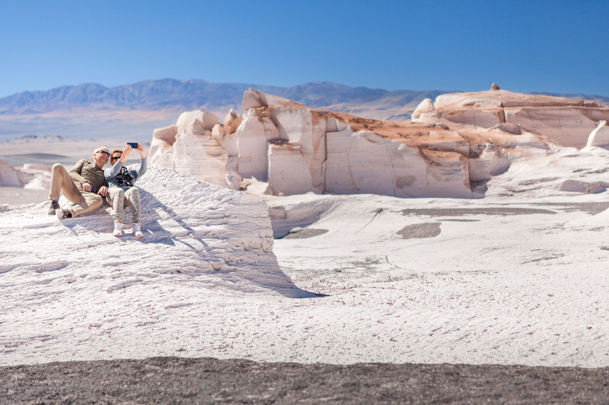
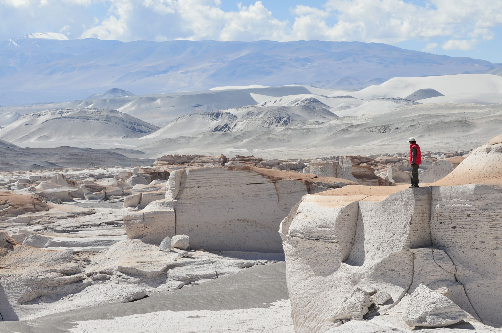

Lugares turisticos


Lo cierto es que la mayoría de los imperdibles de la Puna se alejan de los grandes centros urbanos. Si quieres vivir al máximo un romance adrenalínico con los regalos del norte argentino, las excursiones o expediciones suelen partir desde Ciudsaddad de Salta, San Salvador de Jujuy o San Fernando del Valle de Catamarca. Aunque también desde las localidades turísticas de la Quebrada de Humahuaca.
La región de la Puna, que abarca partes de Argentina, Bolivia, Chile y Perú, se caracteriza por su altitud elevada, generalmente por encima de los 3,500 metros sobre el nivel del mar. Debido a esta altitud, el clima en la Puna es generalmente frío y seco.
Temperaturas en la Región de la Puna: Temperatura media: Las temperaturas promedio en la Puna pueden oscilar entre los 5°C y 10°C durante el día.
Temperatura mínima: Durante la noche, especialmente en invierno, las temperaturas pueden descender por debajo de los 0°C, alcanzando a veces -10°C o incluso menos en algunas áreas.
Temperatura máxima: En los días soleados, las temperaturas pueden subir hasta los 15°C o 20°C, aunque esto es menos común.
El clima es bastante extremo debido a la altitud, con variaciones significativas de temperatura entre el día y la noche, lo que es característico de las regiones montañosas y desérticas.
Temperaturas en la Región de la Puna: Temperatura media: Las temperaturas promedio en la Puna pueden oscilar entre los 5°C y 10°C durante el día.
Temperatura mínima: Durante la noche, especialmente en invierno, las temperaturas pueden descender por debajo de los 0°C, alcanzando a veces -10°C o incluso menos en algunas áreas.
Temperatura máxima: En los días soleados, las temperaturas pueden subir hasta los 15°C o 20°C, aunque esto es menos común.
El clima es bastante extremo debido a la altitud, con variaciones significativas de temperatura entre el día y la noche, lo que es característico de las regiones montañosas y desérticas.
Por la altura en la que se encuentran la mayoría de las joyitas del Norte Argentino, algunos visitantes pueden contraer el mal de altura. Se trata de un “apunamiento” que puede causar náuseas, ensordecimiento, dolores de cabeza, cansancio y fatiga.
Anotá estas recomendaciones para vivir al máximo tu travesía por la Puna:
1. Evitar ascensos bruscos en pocas horas.
2. Los dos o tres primeros días de estar en la altura, realizar poca actividad física.
3. Consumir hidratos de carbono (azúcares) en pequeñas y múltiples raciones.
4. No fumar ni tomar bebidas alcohólicas.
5. No tomar medicamentos que provoquen sueño.
6. Consultar al médico si recomienda alguna medicación específica antes del viaje.
Anotá estas recomendaciones para vivir al máximo tu travesía por la Puna:
1. Evitar ascensos bruscos en pocas horas.
2. Los dos o tres primeros días de estar en la altura, realizar poca actividad física.
3. Consumir hidratos de carbono (azúcares) en pequeñas y múltiples raciones.
4. No fumar ni tomar bebidas alcohólicas.
5. No tomar medicamentos que provoquen sueño.
6. Consultar al médico si recomienda alguna medicación específica antes del viaje.